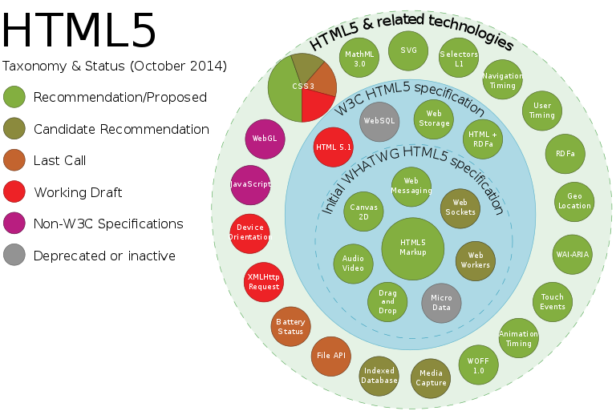

HTML5
S S B W
Hitos en el desarrollo del HTML:
- HTML 1.0, (1991) en el CERN
- HTML 2.0, (1995) en los primeros navegadores
- HTML 3.2, (1997) ya incluyó formularios y tablas
- HTML 4.0, (1997) con CSS
- HTML 4.01, (1999) el que venimos usando
- XHTML 1.0, (2000)
- . . .
- . . . plugins: flash player,
java,
javascript, silverlight, actionscript - . . .
- HTML5, (2011) una propuesta para unificar plugins
- HTML5, (2014) Primera versión
Novedades del HTML5
Nuevo parsing, no basado en SGML,
que se dispara con <!DOCTYPE html>
Novedades del HTML5
- Elementos nuevos multimedia
<audio>, <video> y <canvas> - Elementos semánticos para especializar a
<div>:<section>,<article>,<header>,<footer>,<nav> - Nuevos elementos para forms:
<datalist>,tipos de entrada para campos:text, date, url, email, tel, number, color, etc
Novedades del HTML5
- Inclusión de SVG y MATHML
- Soporte para geolocalización
- Soporte para arrastrar y soltar
- Soporte para almacenamiento local (
IndexDB) - Mejoras en la comunicación con el servidor (
WebSocket)
HTML4 vs HTML5

HTML4
<!DOCTYPE html PUBLIC "-//W3C//DTD HTML 4.01//EN" "http://www.w3.org/TR/html4/strict.dtd">
<html lang="en">
<head>
<title> HTML4 </title>
<meta http-equiv="Content-Type" content="text/html; charset=utf-8">
<link rel="stylesheet" type="text/css" href="externalFile.css">
<script src="js/scripts.js" type="text/javascript"></script>
</head>
<body>
</body>
</html>
HTML5
<!doctype html>
<html lang="en">
<head>
<meta charset="utf-8">
<title> HTML5 </title>
<link rel="stylesheet" href="css/styles.css">
<script src="js/scripts.js"></script>
</head>
<body>
</body>
</html>
Soporte de HTML5
El soporte de HTML5 es todavía parcial
No todos los navegadores soportan todas las características

No todos los navegadores soportan todas las características
Twitter Bootstrap
Es una colección de plantillas de css y js originalmente usada en Twitter para:
- Responsive design (adaptación automática a móviles y tablets)
- Grid System (posicionar los elementos en la página)
- Interface UI (forms, botones, menús, etc)
Pero hay más Fraemworks CSS
Usando bootstrap
- - Descargamos el código desde
Bootstrap y lo descomprimimos, o con npm,
o lo usamos de un Content Delivery Network - - Copiamos y pegamos el código mínimo desde Basic template o desde ejemplos
- - Hacemos el grid system, y vamos añadiendo componentes tal como viene en la documentación,
Materialize
Una alternativa a bootstrap